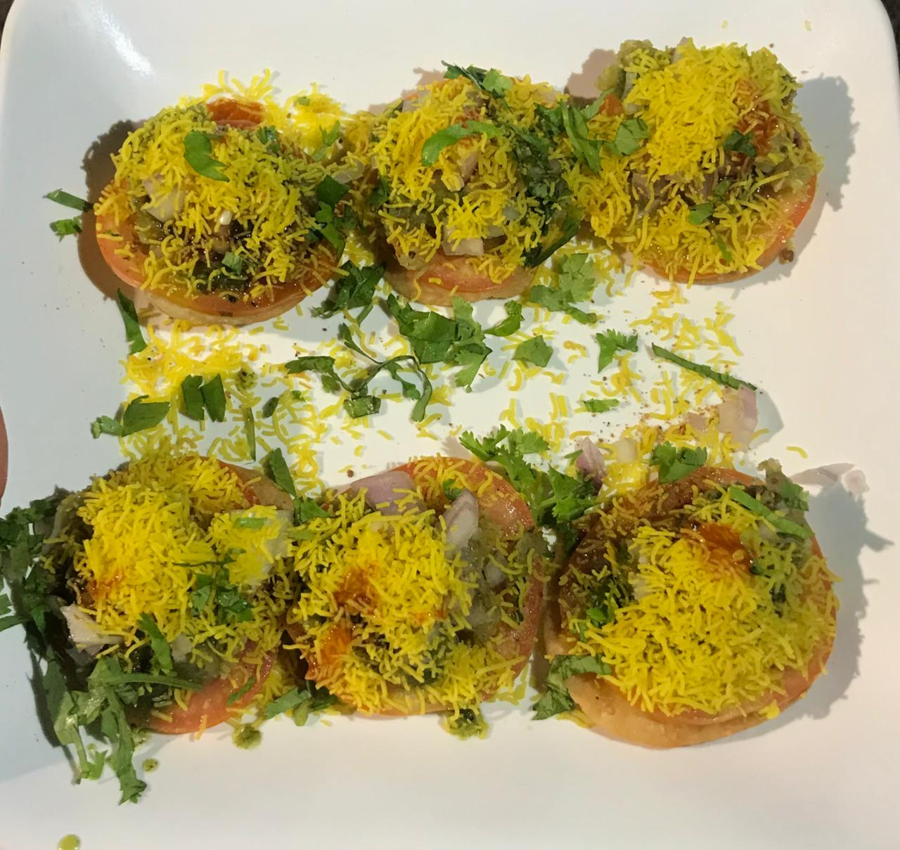

Simple-Panipuri
Pani puri is a popular Indian street food consisting of a small, crispy, hollow puri shell filled with a savory and spicy potato and chickpea mixture, which is then dunked in a tangy and flavorful water (pani). It is known by various names across different regions, including golgappa in North India, puchka in West Bengal, and gup chup in parts of Odisha and Jharkhand.
DahiPuri
Dahi puri is an Indian snack food which is especially popular in the state of Maharashtra.[1] The dish is a type of chaat and originates from the city of Mumbai.[2] It is served with mini-puri shells (golgappa), which are also used for the dish pani puri. Dahi puri and pani puri chaats are often sold by the same vendo.

SevPuri
Sev puri is a popular Indian street food snack, a type of chaat, that features crispy flat puris topped with a mix of ingredients including diced potatoes, onions, and tomatoes, along with tangy, sweet, and spicy chutneys. It is then garnished with a generous sprinkle of "sev" (crispy gram flour vermicelli) and fresh ingredients like cilantro and pomegranate.